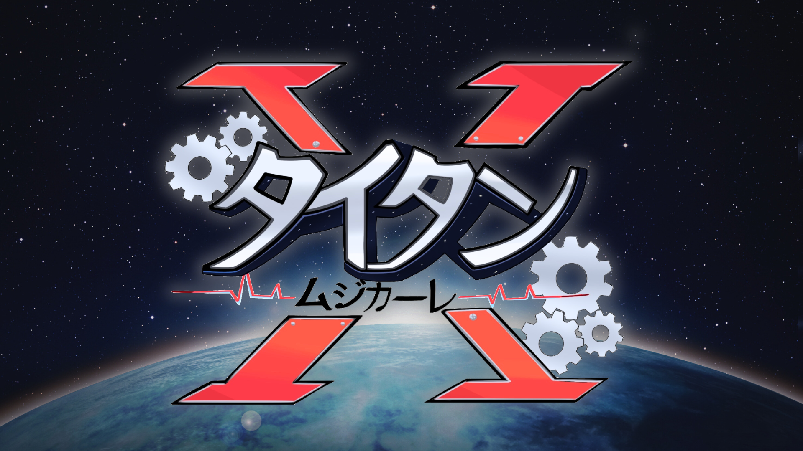
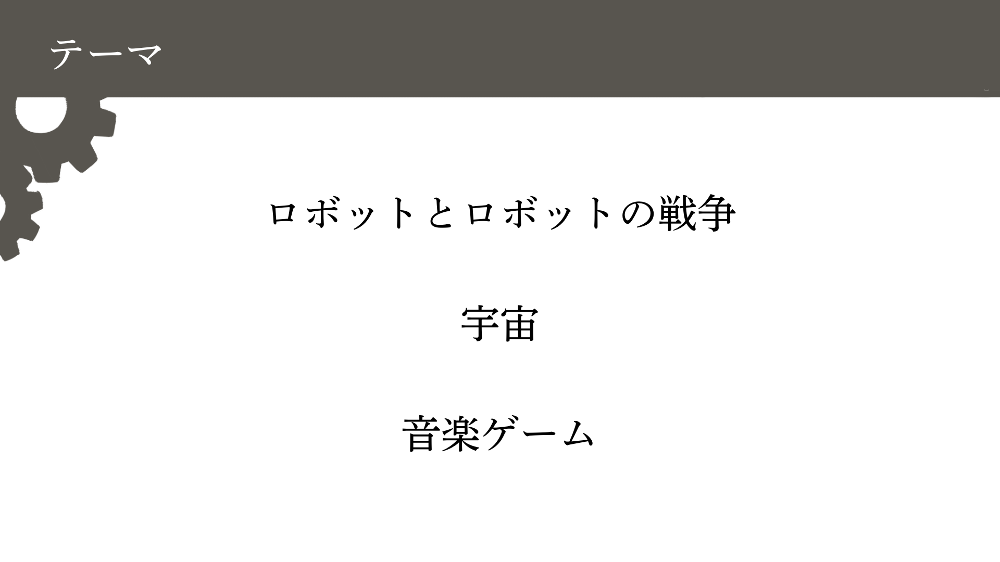
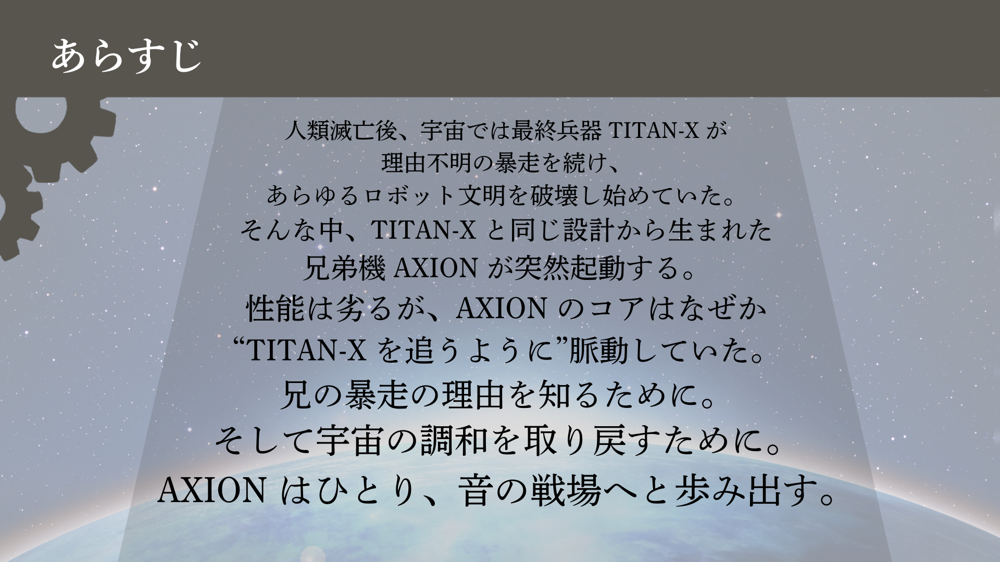
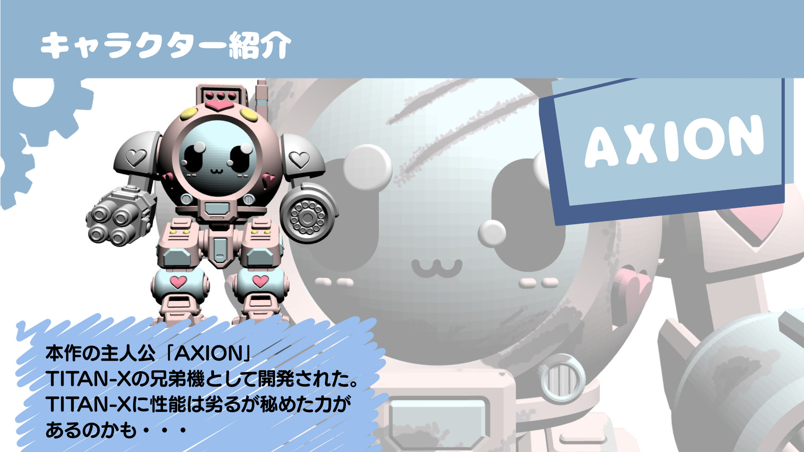
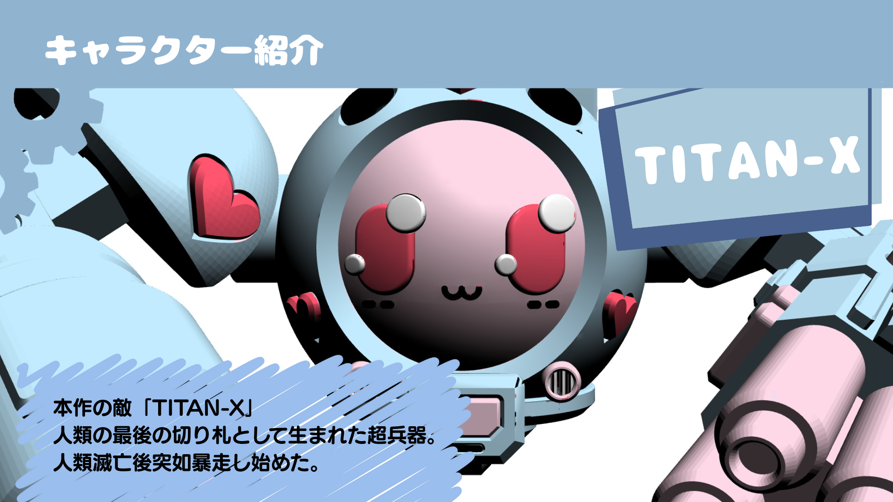
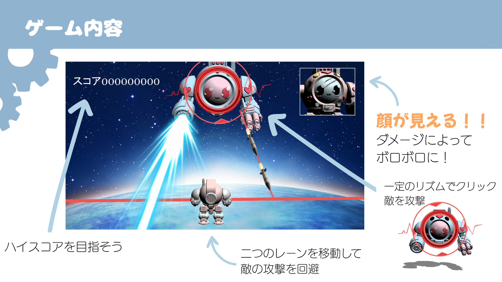
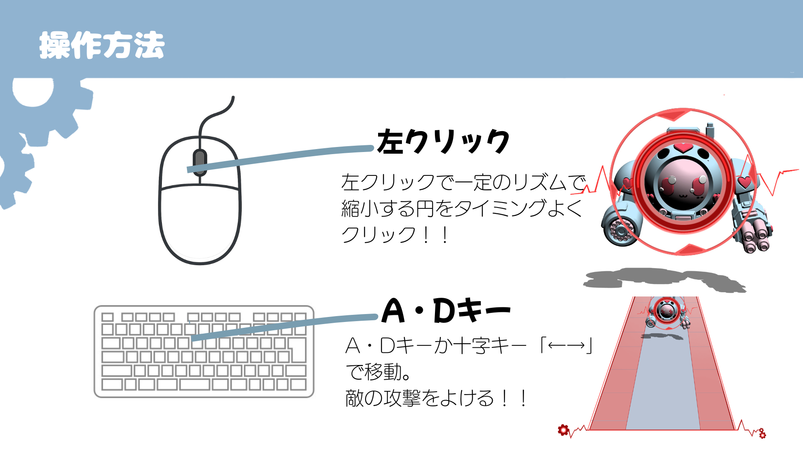
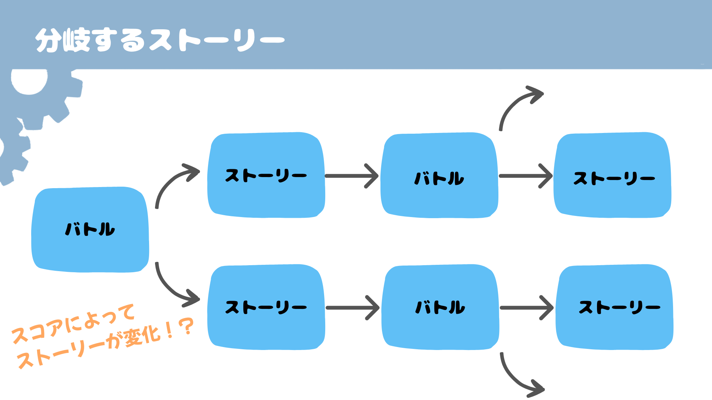
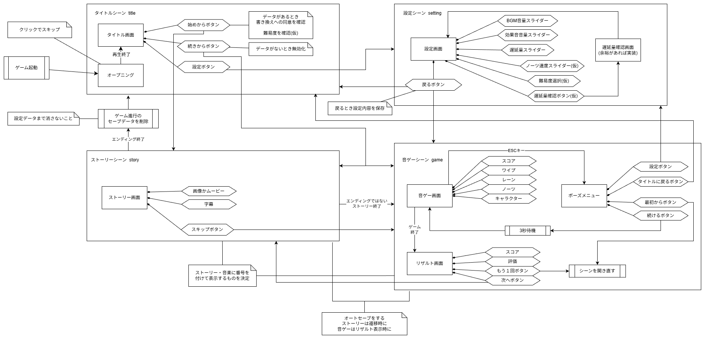
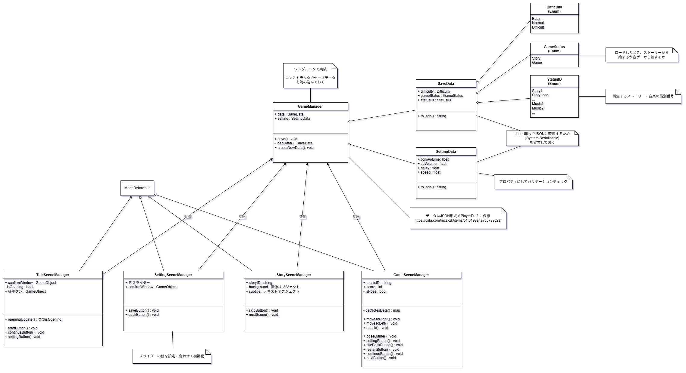

タイタンXムジカーレ
作品紹介
授業の一環として、3名のチームで開発を行ったリズムゲームです。
チーム内での僕の主な役割としては、企画、設計、コーディングの一部、全体の役割分担や進捗管理を行いました。
チーム内で情報共有を行い、Gitを使用して作業の分担を行うなどチーム開発が円滑に進められるように努力しました。
企画書
       設計図
画面構成
UMLクラス図
努力したところ
リーダーとしてチームをまとめることを第一に考えて開発を行いました。
仕様や必要な素材などについては口頭での説明だけでなくドキュメントにも整理し、チーム内で共有するようにしました。
期限に間に合うよう適切なスケジュールを考え、手順の説明や開発のアドバイスをするなど、チームメンバーの補助に努めました。
また、自分でも手を動かして開発を行い、設計・ドキュメントの見直しや修正も行いました。
作品リンク
UnityroomGitHubソース